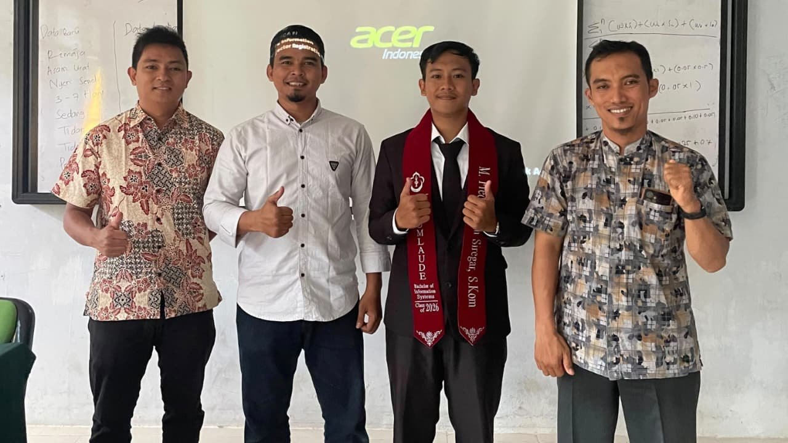
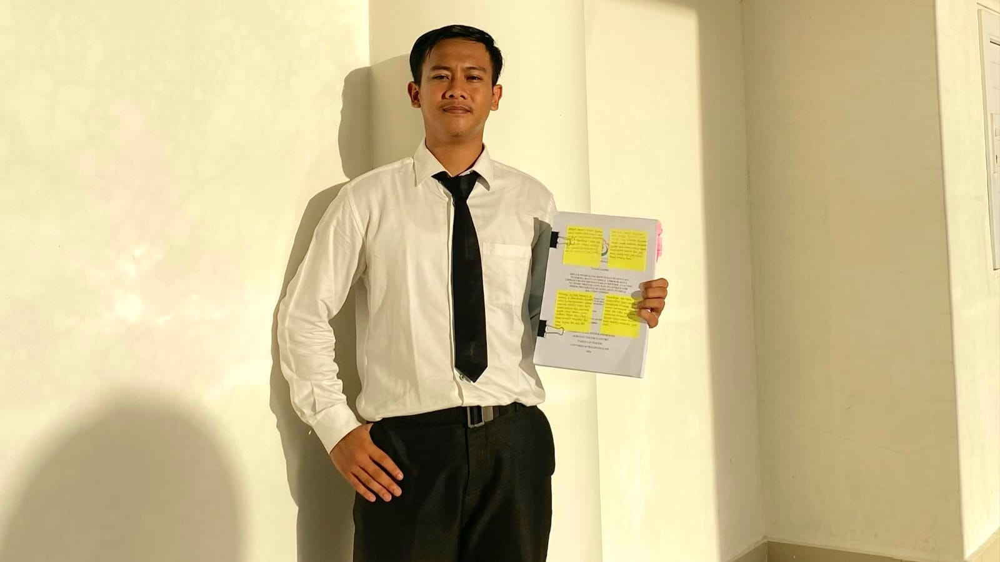
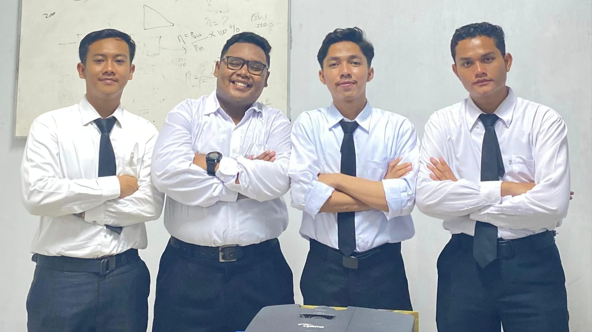

Sistem Pendukung Keputusan Penerima Bantuan Sosial UMKM di Kota Lhokseumawe Menggunakan Metode ANP dan TOPSIS
Universitas Malikussaleh - Program Studi Sistem Informasi
Core Competencies / Technologies & Focus



Latar Belakang Masalah
Berdasarkan data rekapitulasi Dinas Perindustrian, Perdagangan, dan Koperasi Kota Lhokseumawe tahun 2025, tercatat sebanyak 6.947 unit usaha UMKM. Penentuan kelayakan penerima bantuan sosial bagi sektor ini masih menghadapi kendala serius akibat proses seleksi konvensional yang rentan terhadap bias subjektivitas, kurangnya transparansi, serta lambatnya verifikasi data, sehingga berisiko memicu ketidaktepatan sasaran penyaluran dana.
Metode / Teknologi yang Digunakan
A. Integrasi Metode ANP, SWARA, & TOPSIS: Penelitian ini menerapkan kerangka kerja Multi-Criteria Decision Making (MCDM) hibrida. Metode Analytic Network Process (ANP) dan Step-wise Weight Assessment Ratio Analysis (SWARA) digunakan secara paralel untuk pembobotan kriteria, sementara Technique for Order Preference by Similarity to Ideal Solution (TOPSIS) diaplikasikan sebagai mesin perankingan alternatif berdasarkan jarak solusi ideal positif dan negatif.
B. Parameter Penilaian Kriteria: Melibatkan 6 parameter objektif utama, yaitu Omzet Bulanan (C1 - 18,34% bobot ANP / 18,01% bobot SWARA), Total Aset Usaha (C2 - 8,72% ANP / 13,05% SWARA), Lama Usaha (C3 - 20,36% ANP / 10,44% SWARA), Tanggungan Keluarga (C4 - 19,25% ANP / 22,78% SWARA), Kepemilikan SKTM (C5 - 19,97% ANP / 20,71% SWARA), dan Riwayat Bantuan (C6 - 13,37% ANP / 15,01% SWARA).
C. Pengembangan Sistem Berbasis Web: Sistem dibangun menggunakan bahasa pemrograman PHP, basis data relasional MySQL, serta diuji fungsionalitasnya menggunakan metode pengujian sistem Black Box Testing dengan hasil seluruh modul dinyatakan valid.
Hasil & Kesimpulan
A. Hasil Akhir & Perankingan Spesifik: Berdasarkan pengujian terhadap 8 sampel data alternatif UMKM, skenario pembobotan ANP-TOPSIS menghasilkan nilai preferensi tertinggi pada alternatif A2 (Riski Fotokopi) sebesar 0,7886 (Peringkat 1), disusul oleh A7 dan A8. Sedangkan pada skenario SWARA-TOPSIS, alternatif A2 (Riski Fotokopi) tetap konsisten menduduki peringkat pertama dengan nilai preferensi 0,7983.
B. Kesimpulan Utama: Implementasi sistem pendukung keputusan berbasis web ini terbukti sukses mengeliminasi unsur subjektivitas manual, mempercepat birokrasi seleksi, serta memastikan kebijakan penyaluran bantuan sosial UMKM di Kota Lhokseumawe tersalurkan secara transparan, objektif, dan tepat sasaran.
Ingin membaca dokumen skripsi lengkap di repositori resmi kampus?
Lihat Repository Skripsi